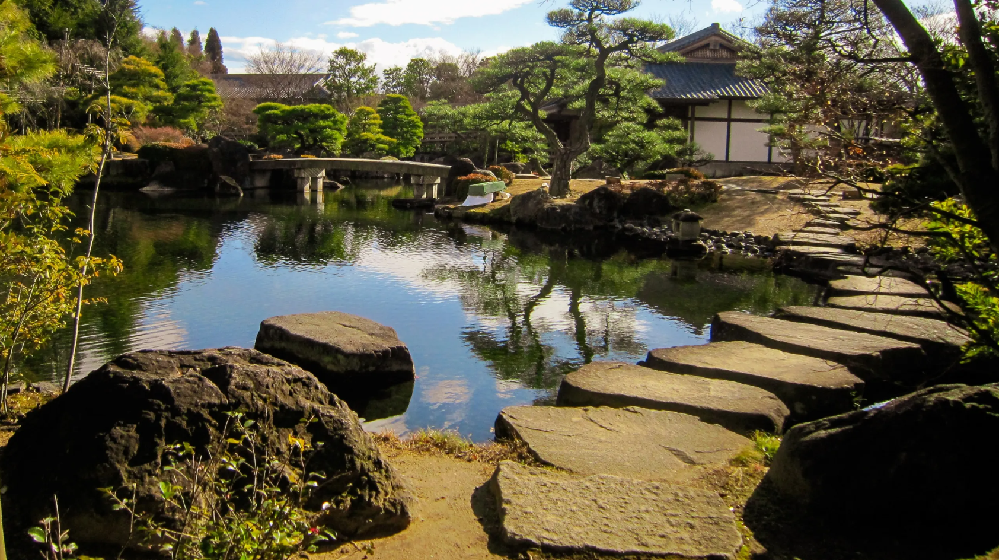
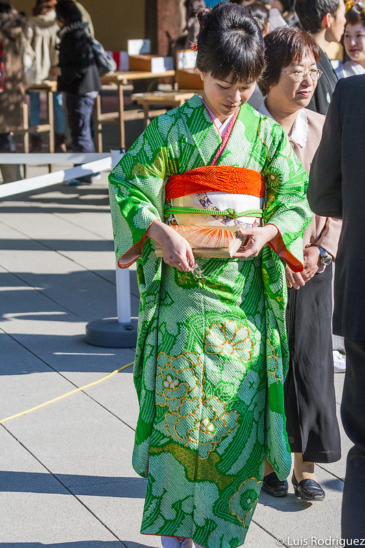
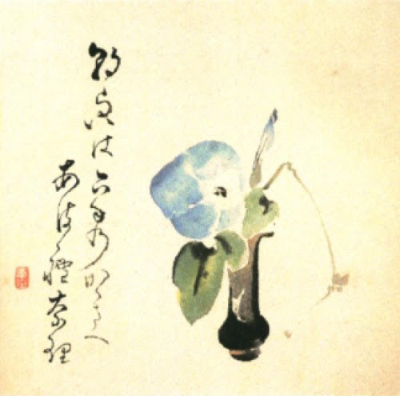

Jardines japoneses (jardines zen)
Espacios de contemplación, equilibrio y conexión espiritual con la naturaleza
Los jardines japoneses, en particular los jardines zen, son ejemplos sobresalientes de cómo la cultura japonesa integra la naturaleza en la vida cotidiana. Estos jardines no son meros espacios decorativos, sino lugares que sirven para la meditación, la reflexión y el encuentro con uno mismo. Utilizando elementos naturales como piedras, agua, musgo y plantas, los jardines zen buscan crear un espacio que evoque paz, serenidad y equilibrio, invitando a la contemplación y al desapego de las preocupaciones mundanas.
En un jardín zen, el diseño es esencialmente simbólico y está cargado de significados filosóficos. Las rocas pueden representar montañas, el agua puede ser vista como el flujo de la vida, y los espacios vacíos son tan importantes como los elementos físicos, ya que representan el “ma” o el vacío, que se considera fundamental para el equilibrio. Estos jardines no solo buscan crear belleza, sino ofrecer una experiencia sensorial y espiritual que conecta al visitante con la naturaleza y, a través de ella, con su propio ser interior.

Ikebana (arte del arreglo floral)
La meditación floral que une arte, naturaleza y espiritualidad
El ikebana, el arte tradicional japonés de arreglar flores, no solo se trata de crear composiciones estéticamente agradables, sino de una forma de meditación profunda que refleja la relación espiritual entre el ser humano y la naturaleza. A diferencia de la floristería occidental, que se enfoca en la abundancia de flores y colores, el ikebana es un arte minimalista que busca equilibrio, asimetría y una profunda simplicidad. En cada arreglo, se elige cuidadosamente no solo el tipo de flor, sino también su forma, su posición y su simbología dentro de la composición.
El ikebana incorpora elementos filosóficos del zen, donde el proceso mismo de crear el arreglo floral se convierte en una práctica de mindfulness, invitando al practicante a centrarse en el momento presente. Cada línea y cada espacio vacío (conocido como “ma”) tienen un significado, y los arreglos no solo buscan representar la belleza estética, sino también la conexión con lo efímero de la vida y la transitoriedad de la naturaleza. En el ikebana, la flor no es solo un elemento decorativo, sino un medio para explorar conceptos más profundos como el ciclo de la vida y la muerte, el paso del tiempo y la fragilidad.
A lo largo de los siglos, el ikebana se ha convertido en una disciplina refinada, con diversas escuelas que desarrollan sus propios estilos y técnicas. En su forma más pura, el ikebana es considerado una forma de arte espiritual que no solo cultiva el sentido estético, sino también la paz interior.

Kimono y vestimenta tradicional
El kimono es uno de los símbolos más representativos de Japón, reflejando la conexión entre el individuo y su cultura, la naturaleza y el tiempo. Esta prenda tradicional, con su compleja estructura y técnicas de confección, ha evolucionado a lo largo de los siglos, desde su uso como ropa cotidiana hasta convertirse en un elemento ceremonial y festivo. Cada kimono tiene un significado propio, dependiendo de su diseño, color y la ocasión en que se lleva, representando valores como el respeto, la humildad y la formalidad.
Aunque el kimono fue reemplazado por ropa occidental en la vida diaria, sigue siendo usado en eventos especiales como bodas, ceremonias del té y festivales tradicionales. En estos contextos, el kimono se convierte en un medio para expresar el respeto por la tradición y el entendimiento de la importancia de los rituales. Además, su diseño, influenciado por la naturaleza y las estaciones, refleja el sentido estético japonés de belleza efímera y armonía.

Haiku y poesía clásica japonesa
La belleza de lo efímero en tres versos
El haiku es una forma poética breve pero profunda que captura la esencia de la naturaleza y el momento presente. Con solo tres versos y un total de 17 sílabas, el haiku se distingue por su economía de palabras, buscando transmitir una imagen o emoción que se relaciona directamente con la experiencia del mundo natural. Esta forma de poesía, que se originó en Japón durante el siglo XVII, no solo busca captar una imagen visual, sino también una sensación de transitoriedad y reflexión sobre el paso del tiempo, lo efímero y lo eterno.
La estructura del haiku está diseñada para hacer que el lector se detenga y contemple lo que parece ser una imagen sencilla pero profunda. Las estaciones del año, el cambio en la naturaleza, y las emociones humanas más íntimas son comunes en los temas tratados en haikus. El enfoque en lo natural refleja el principio japonés de encontrar la belleza en la simplicidad, y la sensibilidad hacia lo efímero, lo que refleja una visión del mundo influenciada por el budismo Zen. Esta poesía tiene la capacidad de transformar lo cotidiano en algo trascendental, instando a la contemplación profunda de lo más simple y lo más cercano.
